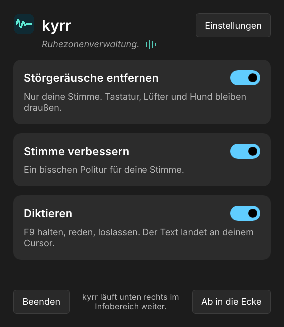

Rauschunterdrückung und Diktat für Windows und Linux
kyrr ist eine kostenlose Open-Source-App. Sie entfernt Störgeräusche aus deinem Mikrofon und wandelt Sprache in Text um, auf Deutsch und Englisch. Der gesamte Ton wird auf deinem Computer verarbeitet.

Funktionen
Rauschunterdrückung
Entfernt Hintergrundgeräusche wie Tippen, Lüfter oder Verkehr in Echtzeit aus dem Mikrofonsignal. kyrr nutzt dafür das neuronale Netz DPDFNet, mit einem großen Modell und einem kleinen, das weniger Rechenleistung braucht. Apps wie Teams, Zoom, Discord, OBS oder der Browser bekommen den bereinigten Ton, ohne dass du dort etwas einstellen musst.
Stimmbearbeitung
Filter gegen tiefes Rumpeln, Klang-Voreinstellungen (Neutral, Warm, Klar, Hell oder eigene), Kompressor, De-Esser, Popschutz und automatische Lautstärke. Voreingestellt: neutraler Klang, mittlere Kompression, leichte S-Laut-Dämpfung, Rumpelfilter und automatische Lautstärke. Alles lässt sich in den Einstellungen ändern.
Diktat
Halte F9 gedrückt, während du sprichst. Beim Loslassen tippt kyrr den Text an der Cursorposition ein, in der App, in der du gerade schreibst. Deutsch und Englisch. „Neue Zeile“ fügt einen Zeilenumbruch ein. Statt F9 gehen auch F8, Pause oder Strg rechts, oder einmal tippen zum Starten und einmal zum Beenden.
Pegelkontrolle
Anzeigen zeigen, was das Mikrofon aufnimmt und was bei den Apps ankommt. Ein Zehn-Sekunden-Test nimmt deine Stimme auf und spielt sie vor und nach der Bearbeitung ab. Du kannst dich auch live über Kopfhörer mithören.
Funktionsweise
- Installation. Windows: ein Installationsprogramm, das Administratorrechte braucht. Linux: eine einzelne AppImage-Datei, ohne Administratorrechte. Beim ersten Start richtet sich kyrr selbst ein.
- Ton. Unter Windows fügt kyrr dem Windows-Audiosystem einen Filter hinzu, der direkt am Mikrofon arbeitet. Unter Linux legt kyrr ein PipeWire-Mikrofon namens „kyrr“ an und macht es zum Standard. Deine Apps brauchen keine Änderung. Wechselst du das Mikrofon, wechselt kyrr mit.
- Diktat. Beim ersten Diktieren lädt kyrr einmalig das Sprachmodell für deine Sprache herunter (Deutsch 900 MB, Englisch 663 MB). Danach funktioniert das Diktat offline.
- Updates. kyrr sucht einmal täglich nach einer neuen Version und zeigt sie an. Unter Windows installiert „Aktualisieren“ sie. Unter Linux beendest du kyrr und führst die Installationsbefehle erneut aus.